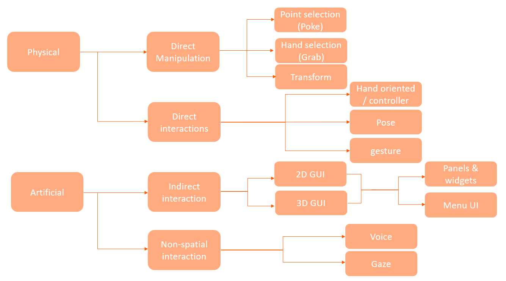

What are Interaction patterns
One of the many features which makes a VR experience enjoyable and of high quality are the interactions between the user and the virtual environment, these are known as the interaction patterns. An example would be different ways of picking up an object and resizing it. With the help of camera, sensor, and controller information, it is possible to try and make the movements as natural as currently possible.
To be able to properly interact with the object it is required for them to have the physics properties, this means they are touchable, can fall due to gravity, objects can be thrown, etc.
There is not one pattern that fulfills all needs, which would be quite difficult to implement, therefore it is important to know what you need your application to do and knowledge about the patterns that are available and their appropriate uses. There are a variety of available interaction patterns, however some of the patterns depend on the capabilities of the VR glasses and the software being used. The patterns will be described in the next section.
The types of Interaction Patterns
Interaction patterns can be categorized into different types, including physical interaction patterns and artificial interaction patterns. The categorization of these interaction patterns is important as it helps developers understand the various methods that can be used to enable users to interact with the virtual environment in an intuitive and natural manner. This, in turn, can enhance the overall user experience in XR and help create more engaging and immersive virtual environments. The categorization of interaction patterns in XR is illustrated in the following image.
 Interaction Pattern categorization.Physical interactions
Physical interactions refer to the methods with which the user interacts with the virtual objects and environment with the help of the physical body, this gives the user a more natural and intuitive feel.
Direct manipulation
Pointing Selection
It is the method in which selection or interaction with an object is done by pointing at it with an input device such as a controller or hand tracking. It is often time used with combination of rays casting, which is the mathematical calculation which defines a line in a 3D space. The ray is casted from the input device and the selected object is determined by the intersection between the ray and the object in the virtual environment. There are 2 main ways in which point selection can be implemented:
- Laser pointer: In this a laser is emitted from the input device to determine the intersection.
- Gaze-based pointing: with this the headsets are used as the input device; it determines the user’s gaze direction and defines the object to be selected.
Hand selection (grab)
This can use both physical hands and tracked controllers. In hand selection, the hand actions are mimicked, meaning the object to be interacted with needs to be in hands reach and they can be directly touched and picked up with the virtual hands. It can also be possible to reach an object that is at a further distance by using a controller to extend the virtual hand in a linear manner to then interact with it. A good practice for this pattern is to calculate or input the users arm length, which gives the user a more natural feel to the interaction. This can be done by asking the user to hold out the hands in front of the body when the application is started, however this is usually done automatically by the headset.
Transform
Add text
Direct interaction
Gestures
Add text
Pose
Add text
Artificial Interaction Pattern
Indirect interactions
2D GUI & 3D GUI
This refers to the interfaces with which as user interacts with, such as a menu. In XR the GUI’s can be either created in 2D or 3D. The 2D GUI interaction usually involve buttons, drop downs menus that are displayed on a flat surface (such as a computer screen). In 3D on the other hand the GUI is created within the environment and can take different forms likes floating panels and interactive objects. Both GUI’s have the feature of widget and panels:
-
Widget and panels
This method refers to the interaction with GUI elements, this can be buttons, textboxes menus, scrollable windows, etc. The choice for this pattern highly depends on the requirements of the environment and user, it is best to select ones that are most intuitive, efficient, and easy to use.
Non-spatial Interaction
This method does not rely on the user’s physical movements, instead the input methods are used. These methods can include voice commands, gaze, and button. This is a great alternative for users that are not able to move or use hand gesture, therefore it is useful to have this method implemented into applications to make it more accessible and divers. The following are examples of non-spatial interactions:
-
Voice commands
This method allows users to interact with the virtual environment using spoken commands, which are translated into actions in the virtual environment using speech recognition technology.
-
Gaze-based interaction
This method allows users to interact with the virtual environment using their gaze direction, by using eye-tracking technology to detect the point where the user is looking and using it to activate or select interface elements.
 To go places and do things that have never been done before – that’s what living is all about.
To go places and do things that have never been done before – that’s what living is all about.